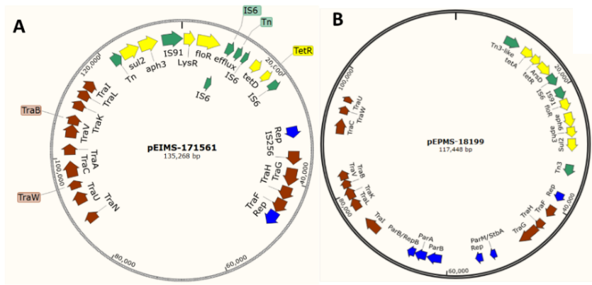
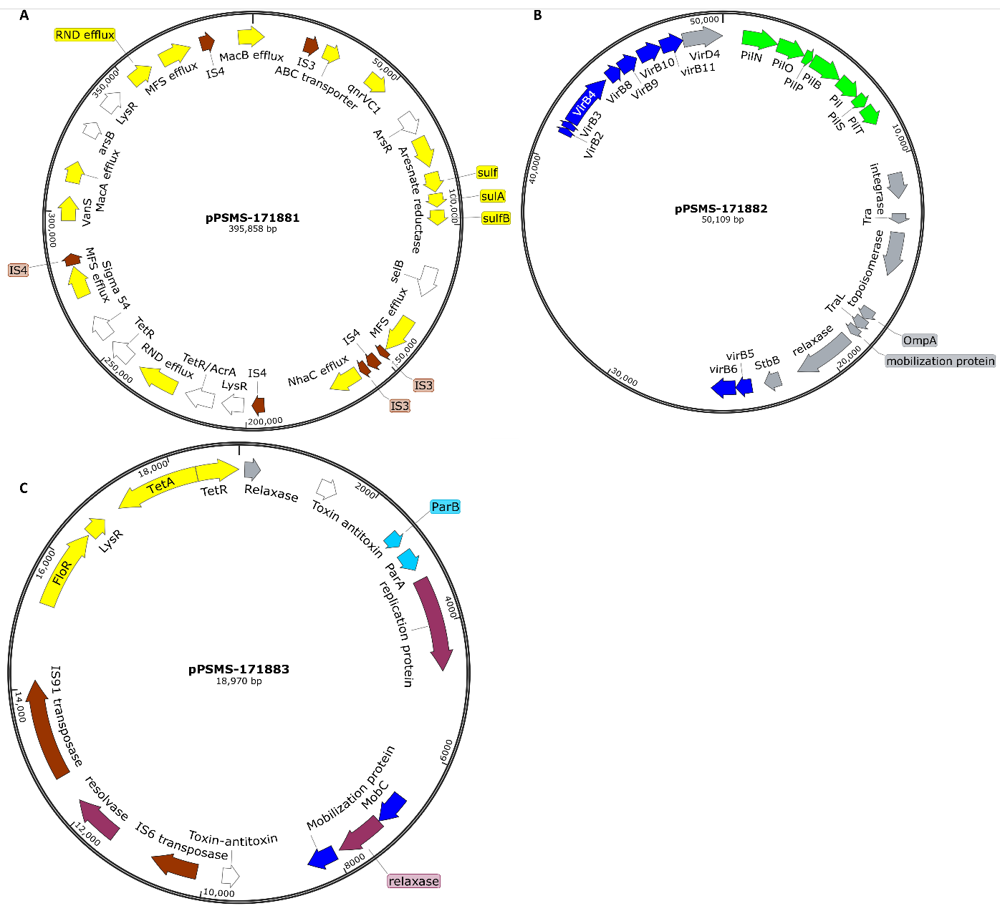
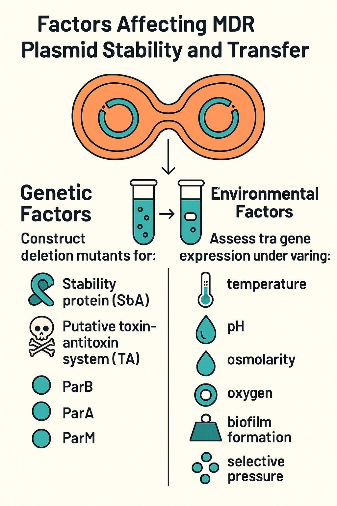
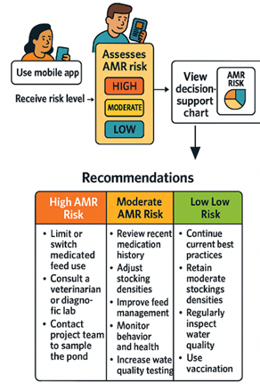

Define the Drivers of AMR Emergence & Transmission
Determine how coinfection, antimicrobial exposure, and environmental pressures promote AMR emergence, persistence, and horizontal gene transfer.
Research Laboratory
Advancing the health, welfare and sustainable production of aquatic animals.
Research program
From AMR emergence and transmission to intervention, stewardship, and AI-enabled prevention.
Determine how coinfection, antimicrobial exposure, and environmental pressures promote AMR emergence, persistence, and horizontal gene transfer.
Define how host, microbial, and environmental factors contribute to the dissemination of AMR.
Use deep-learning behavioral monitoring to detect disease earlier, enable timely intervention, and potentially reduce unnecessary antimicrobial use.
Translate research findings into evidence-based interventions, education, and stewardship that reduce AMR.
Medical relevance: understand how resistance emerges and spreads, then translate that knowledge into strategies that reduce antimicrobial selection pressure.
What is the mechanism of resistance?



